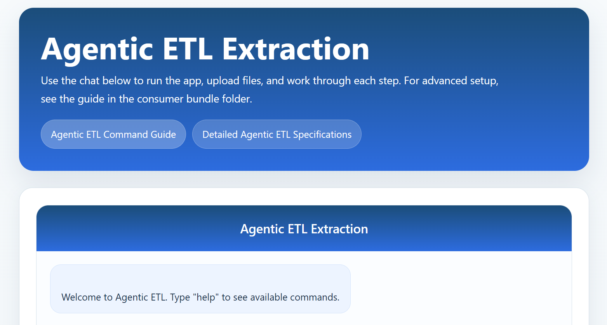
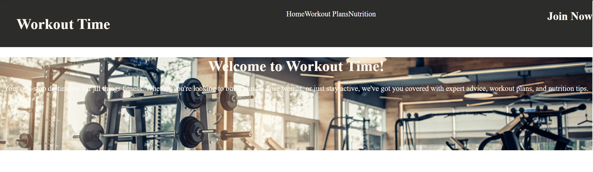

Agentic AI ETL Pipeline
An automation-focused project that explores intelligent data processing, practical workflow design, and software tooling for data-heavy tasks.
Building responsive, user-centered sites and application experiences.
Turning ideas into working tools through practical, iterative development.
Explaining technical work clearly and supporting users with empathy.
I am entering Kent State University in Fall 2026 as a B.S. in Information Technology student, specializing in web development. I am building a foundation in modern web technologies, software design, and practical problem-solving while continuing to grow through personal projects, hands-on learning, and real-world experience.
My work combines front-end development, back-end systems, and emerging tech interests, with projects spanning full-stack web applications, automation, and data-driven tools. I enjoy learning new tools quickly, turning ideas into working solutions, and building software that is both useful and easy to use. I am also bringing experience from customer-facing technology roles, where I solved problems, communicated clearly, and adapted to diverse user needs.
I am currently focused on growing in web development and technology support while pursuing opportunities that let me contribute, learn, and continue building strong technical skills.
Some of my latest work and learning projects.

An automation-focused project that explores intelligent data processing, practical workflow design, and software tooling for data-heavy tasks.

A personal project designed around usability, routine tracking, and practical app structure for everyday productivity.
A timeline of my recent academic and work experience.
| Year | Title | Where |
|---|---|---|
| 2023 - 2024 | Technology Associate | Staples Mentor, Ohio |
| 2024 - 2026 | Online Grocery Associate | Walmart Chardon, Ohio |
| 2022-2026 | Computer Science Student | Bowling Green State University, Ohio |
| 2026 - Present | Warehouse Selector | American Seaway Foods Bedford Heights, Ohio |
| Fall 2026 - Present | B.S. in Information Technology, Web Development Specialization | Kent State University, Ohio |
© 2026 Personal Portfolio | Developed by Ben Jenkins